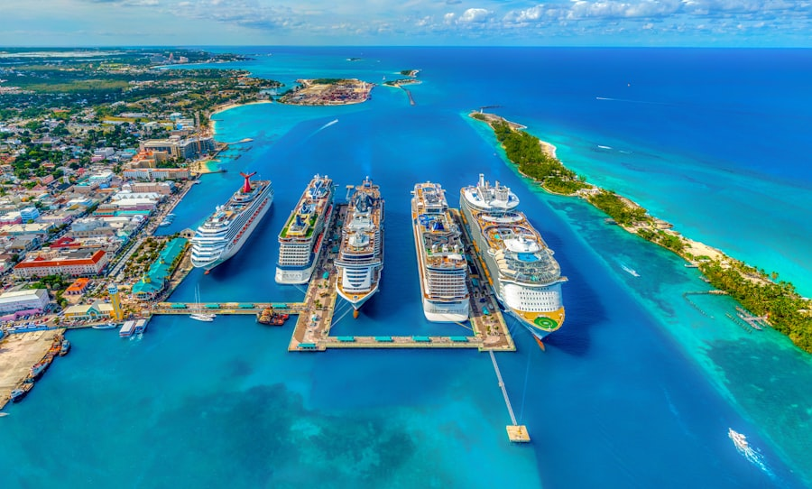

⏱ מרומא בואן: כ־1–1.5 שעות
צ׳יוויטווקיה
נמל השייט של רומא — כ־70–80 ק״מ מרומא.
להגיע לפי חלון הצ׳ק־אין באפליקציה.
מדריך החופשה · רומא · Legend of the Seas · 14–25 בספטמבר 2026
חמישי · Romio 10:30 לנמל · Legend of the Seas · תא 7680 · AGT 19:00

נמל השייט של רומא — כ־70–80 ק״מ מרומא.
להגיע לפי חלון הצ׳ק־אין באפליקציה.

סיפון 7 · קטגוריה F1 · My Time 17:30–18:30.
ערב: America's Got Talent 19:00.
| תא | 7680 · סיפון 7 · F1 |
|---|---|
| יציאה משוערת | ~20:00 |
| ערב | America's Got Talent 19:00 |
| ארוחות | My Time · 17:30–18:30 |
פירוט לכל היעדים: עמוד מוניות בטוחות · חירום והעברות
| אפשרות | מה כולל | עלות משוערת ליום (משפחה ×4) |
|---|---|---|
| A ★ | Romio 10:30 לנמל → עלייה → AGT 19:00 | €199 (Romio €170 + €29 PayPal) |
| B | רכבת Termini→Civitavecchia + מונית לנמל | €50–90 |
מחירים משוערים באירו ליום שלם למשפחה — לא כוללים טיסות/מלון/חבילת השייט עצמה, אלא מה שמשלמים באותו יום לפי האפשרות. לעדכון לפני הנסיעה.